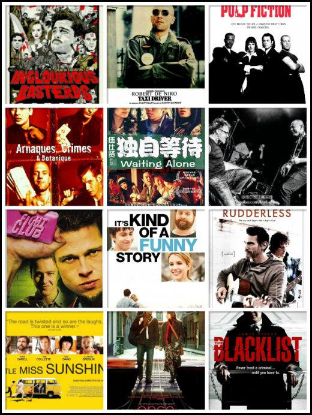

I AM WHPS
- I AM A PROGRAMMER.
- I USED 2 LOVE C LANGUAGE, NOW SHORT SOME.
- MY FAVORITE PROGRAMMER IS DENNIS RITCHIE.
- I AM GLAD 2 DO SOME COMPILER ABOUT WOKR EVEN 4 FREE.
- I AM FOND OF MOVIES, POP-MUSIC, SPEED.
- MY PRINCIPLE IS EFFICIENCY, PRACTICAL AND HAPPY.
- I LIKE NEW THINGS, WHY NOT JUST TRY IT AND FIND FUNS.
-
My friends wondering why i called whps ? i said :
suggest that i have wrote some code and compile it,
unexpectedly it is running and exactly correct.just in
this time, i told myself: w-h-y p-a-s-s !!!
W-H-Y P-A-S-S !
-
I think movie is the most popular invention in human
world. cause it shows everything by kinds of perform.my
wechat id is "i4mylv". there are kinds of m-poster.
-
I am learning some music theory. the beauty chord,
make you happy . math knowledge is also vip 4 music .
what's more, the emotion performed in the tune make
RESONATE WITH YOU.
-
I am intersting in lots of sports such as basetball,
billards , sprint, cycling. i do not miss any nice sports
live , speed always excited people. and healthy is the
premise of coding at least, both everyone cares you.
-
My favorite m-star is "brad pitt", singer is " sam
smith", song is "i am no the only one", baseketball
star is "chris paul", book is "sicp".
AMATEUR
Life beauty cause new.
GOOD AT
- BEFORE GRADE 3 MY FAVORITE LANGUAGE IS C.
- NOW THE VIP IS HWO 2 BE EFFICIENCY AND PRACTICAL.
- I LIKE LANGUAGE SHORT CONFUSE AND SIMPLE.
- A SPOONFUL OF SUGAR MAKES THE MEDICINE GO DOWN.
- ANALYSIS OF THE PROBLEM, SEIZE THE ESSENCE.
- I TRUST MATH IS THE ULTIMATE WEAPON.
- I APPRECIATE NEAT AND REGULAR THINGS.
-
In fact I think the real ability that a man needed is to deal
with the problems, when i do technical problems, even if not
now working, i will put aside for the time being, to overcome
the weakness of human nature, but i can self adjustment.
A useful trade is amine of gold.
BLOG
SHORT MEM SO RECORD .
-
Compiling technical is my favorite branch of Computer Science.
First, compile is series form , that means step 1 do not finished and
step 2 is untouchable , needs rigorous and serious . Second, when I
do some work, compile knowledge is applyed invisiblely. Third, the
learning process is the essence of inquiry and To seek knowledge.
-
Computer tool, at the begining is the calculation tool, now it
become problem solving tools . As with other disciplines , tool is
4 abstract and thinking what make you EFFICIENCY.
-
I admire the most is a computer scientist is Alan Turing. What he
did should be marked by everyone works 4 computer . He's thought
is the most influential guide 4 in CS. He pointed the limit of compute
and whether computable in a problem, that's Turing machine.
-
In the final analysis, our human is mission is reform the world. We
need tool, science and technology. Even math is tools of abstract and
and compute. We do our best to solve the problem, but life is limited.
Like the Chinese said: Smart people make good use of tools.
LOVE
compiler[, whatever]
: )
{ 0; NULL; nullptr; null; undefined; }
MKTHPY
-
That's a story about mkthpy: once I read about the
amazing macros , one like this "#define stdio stdio". I
think that is amazing enough, the reason is " C89/C99
say they are macros. Make them happy". actually they
are declares of struct. In the tiny and funny story I feel
programmer is humous, open, free and easy which let
me more confidence when I am coding. Now I can call
them "mkthpy" !
-
Now my attitude just like the face, happy and 16px.
People may be meet some trouble in his/her work, life
, study, but the basic thing we can do is keep positive,
we are happy programmers!
-
Here is my favorite lines from The Big Bang: " Am I
okay?Leonard Im on a lifelong trajectory that includes
a Nobel prize and cities named after me. All 4 wisdom
teeth fit comfortably in my mouth without need of ex-
tration , and my bowel movements run like a German-
train schedule."
make them happy .
- I USED 2 DO FE IN GRADE 1.
- I HAVE A GREAT FEELING IN VISION AND DESIGN
- I LIKE JavaScript CAUSE FUNCTION-TYPE.
- I'D LIKE 2 THE DEVELOPMENT OF GENERIC COMPONENTS.
- I AM GOOD AT EXPLORE THE NATURE OF THINGS.
- H5, CSS3, AND SOME NEW TECHNICAL GET MORE IMPORTANT.
- THE FRONT END AND OCCUPY AN VIP ROLE IN THE DEVELOPMENT.
-
DETAILS WHY I WANT TO BE FE
I WANT TO BE FE!
CAUSE LOTS

 @ 051115 WHPS.
@ 051115 WHPS.